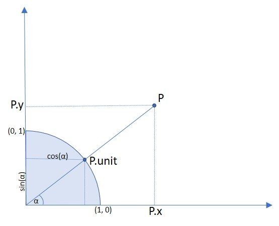

Point#
Point 表示平面中的一个点，由其 x 和 y 坐标定义。
属性 / 方法 |
描述 |
|---|---|
计算到点或矩形的距离 |
|
欧几里得范数 |
|
使用矩阵转换点 |
|
与单位相同，但坐标为正 |
|
点的坐标除以 abs(point) |
|
x 坐标 |
|
y 坐标 |
类 API
- class Point#
- __init__(self)#
- __init__(self, x, y)#
- __init__(self, point)#
- __init__(self, sequence)#
重载构造函数。
如果没有参数，则创建 Point(0, 0)。
如果指定了另一个点，则会创建 新副本，”sequence” 是包含 2 个数字的 Python 序列（参见 在 PyMuPDF 中使用 Python 序列作为参数）。
- 参数:
x (float) – 点的 x 坐标
y (float) – 点的 y 坐标
- distance_to(x[, unit])#
计算到 x 的距离，x 可以是
point_like或rect_like。距离以像素（默认）、英寸、厘米或毫米为单位。
- 参数:
x (point_like,rect_like) – 计算距离的目标。
unit (str) – 测量的单位。可以是 “px”、”in”、”cm”、”mm” 之一。
- 返回类型:
float
- 返回:
到 x 的距离。如果 x 是
rect_like，则距离是连接矩形任意一边的最短线段的长度
计算的是 有限版本 的距离
如果矩形 包含 该点，则距离为零
- norm()#
新版本 1.16.0 引入
返回点的欧几里得范数（长度）作为一个向量。等同于函数 abs() 的结果。
- transform(m)#
将矩阵应用于点，并用结果替代原点。
- 参数:
m (matrix_like) – 要应用的矩阵。
- 返回类型:
- unit#
将每个坐标除以 norm(point) （点到 (0,0) 的距离）后的结果。该向量的长度为 1，方向与点相同。其 x 和 y 值分别等于该向量与 x 轴夹角的余弦和正弦值。
- Type:
- x#
x 坐标
- Type:
float
- y#
y 坐标
- Type:
float
备注
该类遵循 Python 序列协议，因此可以通过索引访问各个组件。另见 在 PyMuPDF 中使用 Python 序列作为参数。
矩形可以与算术运算符一起使用 – 参见 几何对象的运算符代数 章节。
Point represents a point in the plane, defined by its x and y coordinates.
Attribute / Method |
Description |
|---|---|
calculate distance to point or rect |
|
the Euclidean norm |
|
transform point with a matrix |
|
same as unit, but positive coordinates |
|
point coordinates divided by abs(point) |
|
the X-coordinate |
|
the Y-coordinate |
Class API
备注
This class adheres to the Python sequence protocol, so components can be accessed via their index, too. Also refer to 在 PyMuPDF 中使用 Python 序列作为参数.
Rectangles can be used with arithmetic operators – see chapter 几何对象的运算符代数.